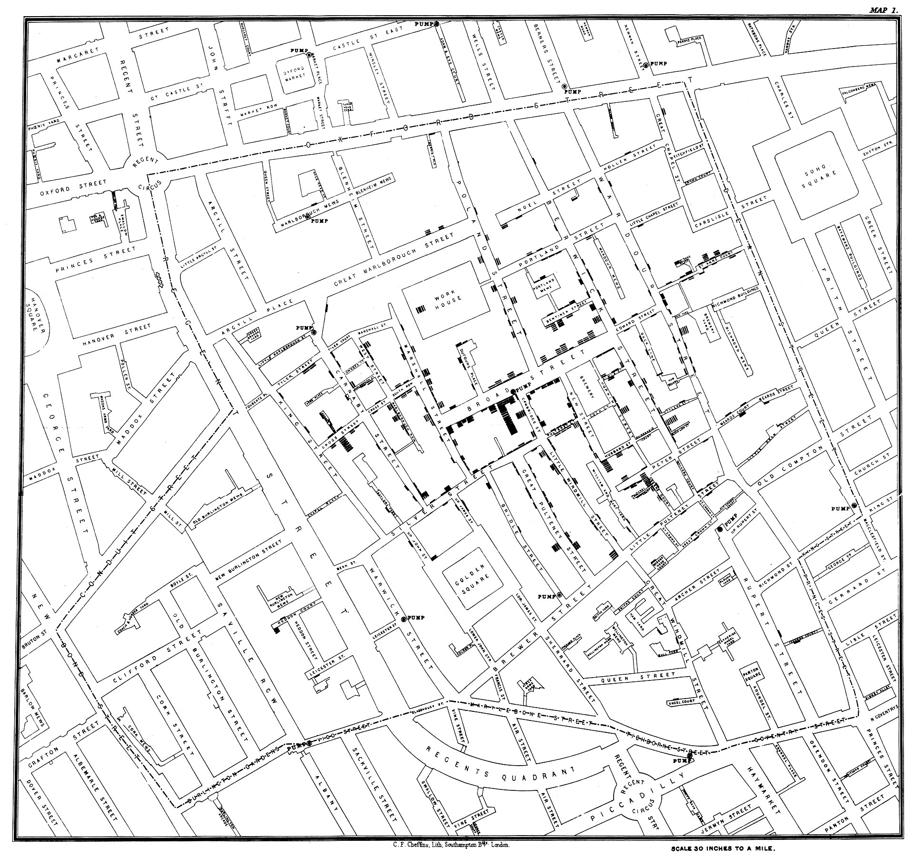

地理の学習の意義
本教材は主に、地形学習を重視したものですが、地形学習は地理の分野に分類されます。そこで、このページでは地理の学習の意義を解説します。
地理の学習
地理では、日本国内や世界の国名、都市名、山や河川の名称等を覚えるのみでなく、地図やグラフを読み取って空間における諸現象を考察します。初中等教育では、用語の暗記のイメージが強いですが、暗記は地理の学習の本質ではなく、地理的見方、考え方を養うことが重要です。
例えば、下の図をみてみましょう。下の図は、1854年にイギリスのロンドン（ブロードストリート）で流行したコレラの症例者数を示す代表的な地図です。この地図は、医師のジョン・スノウによって作られ、黒い横棒がコレラの死者を示します。そのほかの情報として、道路、道路名、施設、ポンプ(●PUMPと表記)が描かれています。教材を読み進める前に、この地図で死者の最も多いところと、死者がほとんどないところを比較してみましょう。

スノウ・コレラマップ(Public Domain)を拡大した図
図の中央のブロードストリートのポンプの周りに多くの死者を確認できます。一方で、その他のポンプの周りには、それほど死者が確認できません。結果的として、ブロードストリートのポンプがコレラの流行の原因となっていました。ポンプを閉鎖したことによって、感染拡大は収束しました。
スティーブ・ジョンソンの感染地図 で動画で解説されています（日本語字幕あり）。その他に、Wikipedia ブロード・ストリートのコレラの大発生で、概要が確認できます。
この事例から、地図が空間的に諸現象を把握することに有効であると理解できます。さらに現代では、地理情報システム（GIS）を用いて、より効率よく空間の情報を分析することができます。下の図は、GISを用いて作成した図で密集度が把握できます。

スノウ・コレラマップをGISで可視化した図（左:円の大きさが死者数。右:50m×50mの範囲での死者数）
地理学と地理
地理学の定義は様々ですが、この教材では、空間における諸現象の因果関係を総合的な視点で解き明かしたり、それらの原因、法則、特徴（形態）、地域差を整理・考察する科学 として地理学を位置づけています。地理は、英語では、Geographyと書き、Geoは、土地、graphyは記録をさします。西川 治 氏（東京大学名誉教授)へのインタビュー記事(富士山クラブ通信31号)では、地理の用語は、「地」は地表、「理」は模様をさし、地球の模様、大地の景色（人間の営みによる人為的な模様を含む）を示すと解説されています。
18世紀後半にカール・リッター(1779 – 1859)と、アレキサンダー・フォン・フンボルト(1769 – 1859)によって確立された近代地理学はその後の発展を経て、地域の具体的な既述から、「空間のなぜ」を重視するようになり、地域における諸現象の因果関係等を科学的に解明する分野 として位置づけられるようになりました。1950年代後半から地理情報システム（GIS）の構築・実用が本格化し、地域を位置情報として捉えることが可能になりました。その後GISの技術は進展し、現在ではスマートフォンの地図アプリなどに代表されるように多くの人が容易に位置情報が利用でき、「地理学的な思考」の機会が身近になっています。
地理学の区分
地理学は、大きく分けて系統地理と地誌の学習にわけられます。これに加えて、地理学の研究手法と関係の深い分野として、地図学、地理情報科学があり、地理学における空間的思考力や、地理的技能の養成、カリキュラムの分析を通じて地理学習のあり方を議論する地理教育の分野があります。
地理学習の区分
中等教育では、系統地理 と地誌 にわかれ、系統地理では、地形、気候、土壌、植生、産業のような空間を構成する主な要素について、形態、発達過程、分布等について学習します。地誌では、アジア、ヨーロッパ、アフリカ等のようにスケールを区切って、地域の特性について学習します。これに加えて、地図・地理情報 のように地域を読み解くために必要な地図と地理情報の基礎と利用法について学習します。
地理学の研究方法
地理学では、研究手法は多様で以下があります。人口や何かの生産量を統計情として理解する能力、空間における諸現象を地図や地理情報として整理、作成する能力、野外で自然現象などを観察、記録する能力など、多様な能力が求められます。
- 地域を記録した書物
- 野外調査・アンケート
- 写真、動画
- 地理情報、統計
- 地図
地形と地理情報の学習
地形は空間を構成する最も基本的な要素です。人は古来から、地形をうまく利用して生活を営んできました。地形を知ることで、産業の発達の理解や災害のリスクの軽減に役立ちます。一方で、地形の学習を難しいと感じる人も多く、用語の暗記にとどまってしまうこともあります。また、等高線による地形の判読の困難さも指摘されてきました。そこで、地理情報システムを使って地形を学習を補佐する教材を開発しました。この教材を使うと地形の基礎と地理情報システムの有用性を理解することができます。